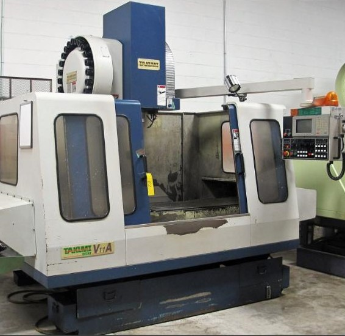
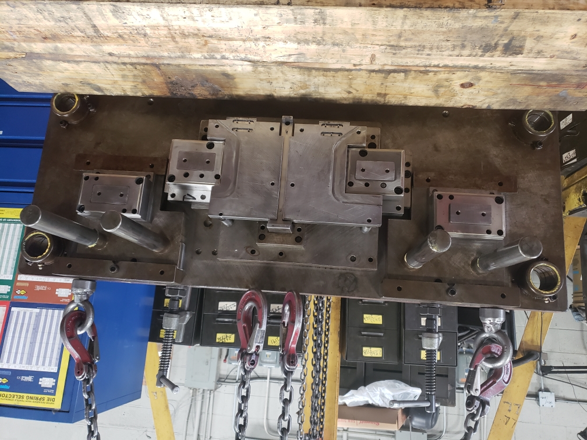
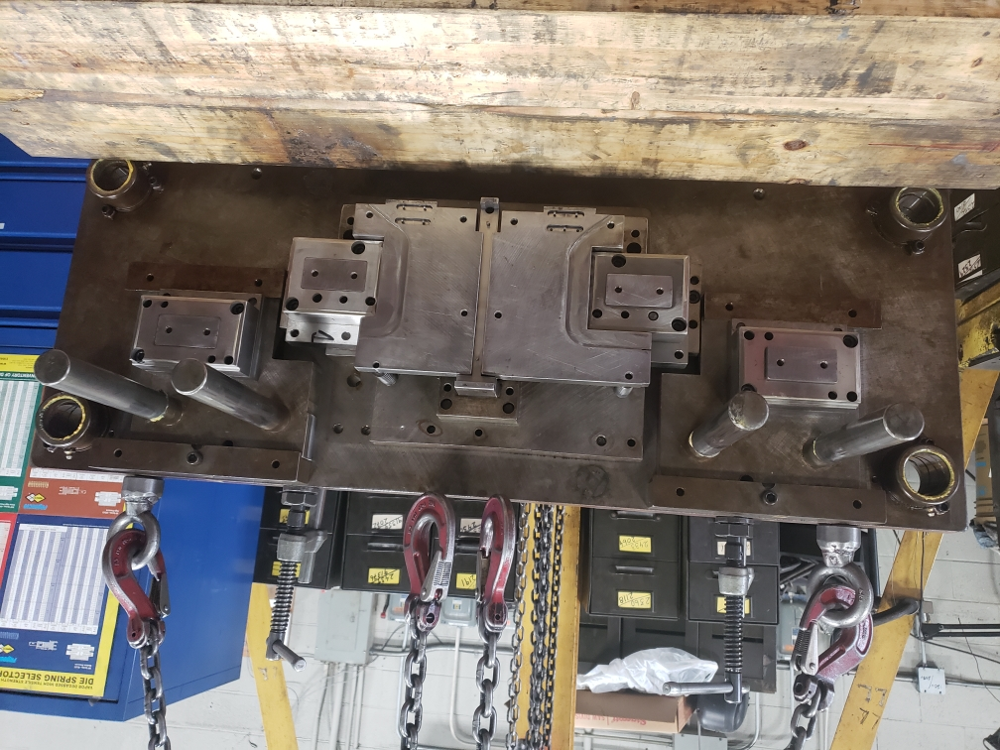

XCO Tooling and Machining inc.

 

Tool and Die CNC Machine shop
XCO Tooling and Machining Inc. is a design, manufacturing and maintenance company in Toronto, Ontario serving various industries,
- Established in 2002 and was formerly known as FES Tooling and Machining
- We are specialized in designing of press tools, welding fixtures, assembly, sub-assembly fixtures
- Manufacturing and maintenance of press tools, jigs, fixtures, and CNC machining
- Equipped with 5 tons crane
- 3 surface grinders
- Manual millings, CNC mill (42x21x24 capacity), and Wire EDM
- Manual and CNC Lathe, Radial drilling, band saw machines and Welding
- Have highly qualified employees with a good experience
- We do pick-ups and delivers with a sophisticated trailer
Quality Products | On-time Delivery | Value Pricing
**WE ARE MAGNA'S APPROVED SUPPLIER**